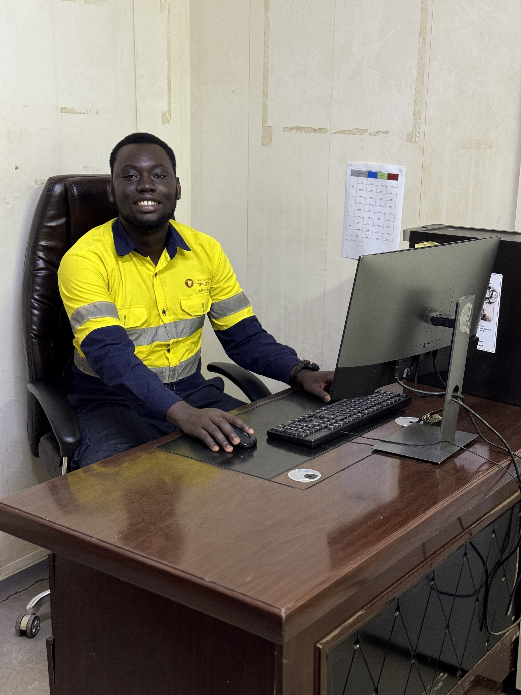

Kwabena D. Ntim
I'm
About
Data Analyst with 7 years of experience turning real-world data into KPI dashboards, decision-support tools, and reports that business teams rely on daily.

Data Analyst & Business Intelligence Developer
Originally trained and currently working as a Geological Engineer, I've spent 7 years turning technical, data-heavy work into automation, dashboards, and reporting systems across engineering, retail, education, and non-profit sectors. I'm actively pivoting toward data analytics as my primary focus, backed by real systems that are already in production use, not just coursework. Strong in SQL and Python, with a track record of building ETL pipelines, KPI dashboards, and automated reports that non-technical stakeholders actually use to make decisions.
Download CV- linkedin.com/in/kwabenantim
- Accra, Ghana
- Open to Data Analyst roles
Happy Clients
Projects
Hours Of Support
Years Experience
Skills
The tools and methods behind the dashboards, pipelines, and systems in this portfolio.
Programming & Query
BI & Visualization
Databases & Data Management
Analytics Methods
Geospatial & Geographic Data
Automation & Tooling
Resume
7 years transforming real-world data into KPI dashboards, decision-support tools, and reports that business teams act on daily, across mining, retail, education, and non-profit sectors.
Download CVSummary
Kwabena Danso Ntim
Data Analyst with 7 years of experience transforming large, complex datasets into KPI dashboards, decision-support tools, and reports used by business teams to drive daily operations.
- Accra, Ghana
- (+233) 555-039-682 / (+233) 503-055-002
- kntim595@gmail.com
Education
BSc. Geological Engineering, Second Class Upper Division
2015 - 2019
Kwame Nkrumah University of Science and Technology (KNUST), Ghana
Quantitative coursework: Engineering Statistics, Mineral Resource Estimation, GIS and Remote Sensing, Project Management.
WASSCE, General Science
2012 - 2015
St. Augustine's College, Ghana
Certifications
- Data Analytics Certificate, Bond University
- Power BI Certificate
- Microsoft Excel: VBA and Macros, Data Visualization, Charts and Graphs
- QGIS Certificate, Central University of Karnataka and State Institute of Urban Development, India
- ISO 45001: Occupational Health and Safety Management System
- Member, Ghana Institution of Geoscientists (GhIG)
Professional Experience
Data Analyst and Geologist
November 2024 - Present
Perseus Mining Ghana Limited, Edikan Mine, Ghana
- Build and maintain automated Power BI and Excel VBA dashboards tracking ore movement, stockpile classification, and production KPIs in real time, improving data accuracy and reducing decision turnaround by over 30%.
- Maintain daily, weekly, and monthly KPI reporting used in operational business reviews by mine management and shift supervisors.
- Run root cause analysis on operational defects such as equipment downtime and reconciliation gaps, presenting findings and recommendations to operational leadership.
- Built the Ore Tracking and Fleet Management System and developed SafeSight, a hazard-reporting application awarded 2nd Runner-Up in the company innovation programme.
Lead Data Consultant
2018 - Present
Platilume Data, Accra, Ghana
- Lead a data and business solutions practice delivering data collection and management, business intelligence, custom dashboards, and operational cost optimization for SME and corporate clients.
- Delivered analytics engagements for clients including Yadan SM, Tilitet Early Childhood Care and Development Centre, Yoliana Services, TonyCee Mining, Iconic Bracelets and NY Essentials.
- Built seasonal demand forecasting models and automated data workflows, cutting report generation time by over 40% during peak operational periods.
Data Analytics Consultant
October 2023 - June 2024
TonyCee Mining Services, at GoldFields Damang Mine, Ghana
- Conducted operational appraisals using structured data analysis, identifying process inefficiencies that contributed to a 17% reduction in project costs.
- Analyzed geotechnical datasets to model ground conditions, slope stability, and site logistics, translating results into rehabilitation recommendations.
Project Supervisor and Data Analyst
October 2022 - December 2022
Yoliana Services, at GoldFields Damang Mine, Ghana
- Monitored KPIs and performance metrics across multiple concurrent infrastructure projects to ensure on-time delivery within quality and safety standards.
- Delivered a 20% reduction in operational costs through structured budgeting analysis and data-backed resource allocation.
Sales Data Analyst and Manager
August 2020 - August 2021
Lebencon Company Limited, Accra, Ghana
- Built real-time Power BI and Excel dashboards tracking sales activity, pipeline performance, and team KPIs, improving visibility and accountability.
- Developed data-informed sales plans that exceeded annual revenue targets by over 15%.
Geological Data Analyst (National Service)
September 2019 - August 2020
AngloGold Ashanti, Iduapriem Mine, Tarkwa, Ghana
- Collected, cleaned, and interpreted large drilling datasets supporting geological modelling, ore block definition, and mine planning workflows.
- Built and maintained geological databases, improving data accessibility and reliability for senior geologists, planners, and operational teams.
Junior Geoscience Analyst (Internship)
July 2017 - September 2018
AngloGold Ashanti, Sankofa Gold, Prestea, Ghana
- Collected and recorded structured field and sampling data across active open-pit operations.
- Performed quantitative laboratory analyses and produced technical data reports for engineering use.
Portfolio
A curated set of systems and tools I've actually built and shipped — not stock examples.
- All
- Live Dashboards
- End-to-End Systems
- Automation & Tools
- Certifications

Sales & Retail Performance Dashboard
Fully interactive Chart.js dashboard with a live region filter: revenue vs target, pipeline by stage, campaign ROI, customer segments.
Open Live Dashboard

{kind=link}
{kind=link}
{kind=link}
{kind=link}
{kind=link}
{kind=link}
{kind=link}
{kind=link}
Services
These are some of the services I offer.
Consultation
Expert guidance in data analytics, business insights, and research planning for impactful decisions.
Data Collection
Designing and executing efficient methods to gather reliable and accurate data for analysis.
Automation
Building automated systems with Excel and Python to simplify and streamline data tasks and reporting.
Optimization
Refining business and technical processes for maximum efficiency and improved performance.
Statistical Analysis & Research
Supporting professional and academic research with powerful statistical tools and expert data interpretation.
Reporting & Visualization
Crafting impactful reports and dashboards to communicate complex data clearly and effectively.
Testimonials
Here are some kind words from people I have worked with.
Contact
Get in touch, let's take your business to the next level through data-driven insights.
Address
Accra, Ghana
Call
+233 555 039 682 / +233 503 055 002
kntim595@gmail.com